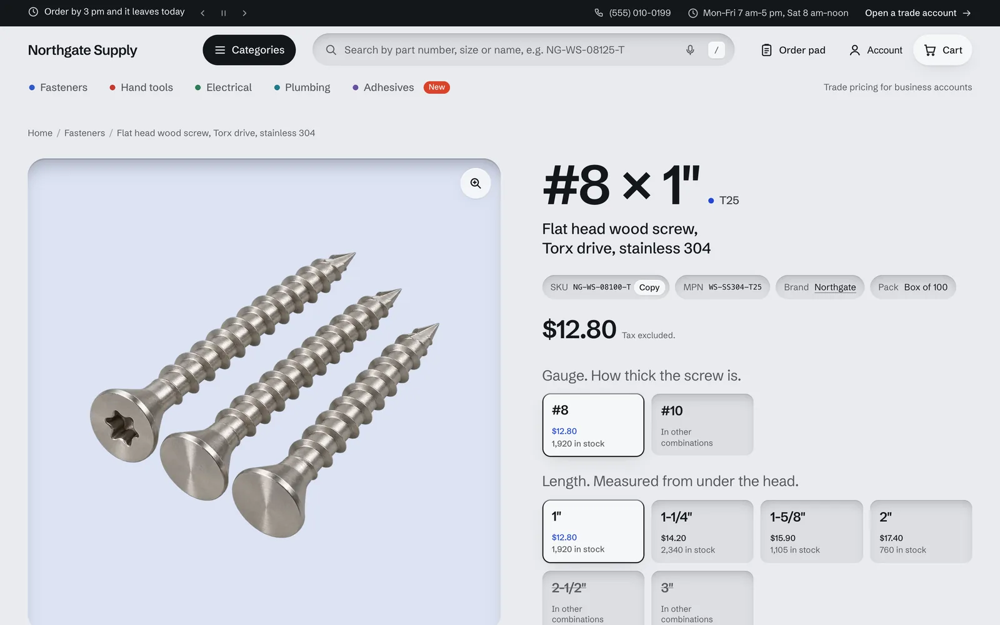
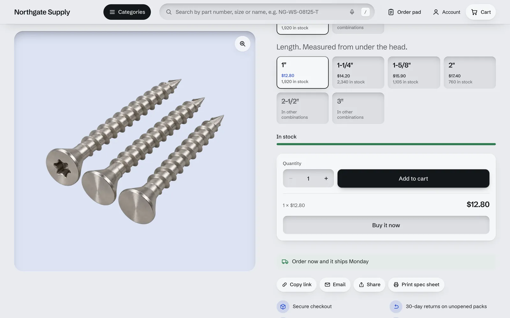

Pages
Product page
The product page is the Product information section. Its blocks are in two groups: the buy area on the right, and panels below that fold open.


#Gallery
Gallery layout sets thumbnails beside or below the main picture, a stacked column of all pictures, or a two-column grid. On desktop the picture magnifies under the pointer; the full screen view zooms and swipes; phones get a swipe row with dots.
Media hotspot blocks put pins with a short note on a photo ("Lever handle: quarter turn, lockable"). Pick the photo by its number and place the pin with the two position sliders.
#Buy area blocks


| Block | What it shows |
|---|---|
| Size and title | The size from caliper.size as the headline, then the product name and rating. |
| Part numbers | SKU (with a copy button), MPN, brand, pack and optionally barcode as chips. |
| Price and stock | Price, compare-at price, unit price, tax note and real stock. |
| Variant picker | Each option as a numbered step of cards; every card shows the price and stock of the variant it would pick. Add hints per option in Option hints, such as Length: Measured from under the head. |
| Volume pricing | The quantity price breaks from your B2B catalog as a table, with a live total and savings under the quantity. |
| Stock bar | Real inventory as a bar; below the threshold it says Low stock. |
| Size chart | A link that opens a page in a dialog. A page in caliper.size_chart on the product overrides the one chosen in the block. |
| Buy buttons | Quantity, add to cart and the dynamic checkout button. |
| Pickup availability | Where the variant can be picked up today. |
| Dispatch time | "Order in the next 2 h and it ships today", from your cutoff time and working days. List dates with no dispatch in Holidays (2026-12-25, 2027-01-01) and the promise skips them. |
| In the box, Trust icons, Payment icons, Ask an expert | What is included, four promises, accepted payments and a contact card. Trust icons can also link to your shipping and returns policies. |
| Payment terms | Your own note, such as "Net 30 terms for approved trade accounts", for everyone or only for signed-in B2B customers. |
| Certifications | The caliper.certifications list (UL listed, CE, RoHS) as marks written out. |
| Back in stock request | Appears when the variant is sold out and arrives as a contact form email. |
| Feature scores | Bars from caliper.ratings. |
| Share and print | Copy link, email, the phone's share sheet and Print spec sheet. |
| Bought together | A short kit of complementary products added in one tap. |
#Panels
| Block | What it shows |
|---|---|
| Specifications | Variant and product specifications as a table. With Millimetre and inch switch on, buyers can show lengths in either unit; pipe and thread sizes stay as written. |
| Installation steps | Numbered steps from caliper.install_steps (one per line) or the block, with the time and difficulty. |
| Compatibility | The caliper.fitment list with a check field. Vehicles in My garage are checked at once, with a tick or a warning, and a vehicle typed with its year can be saved. |
| Documents | Files from caliper.documents with type, size and Preview for PDFs and images. |
| Description, Collapsible content | The product description and your own folded text. |
| Install video | A YouTube or Vimeo link from caliper.install_video or the block. |
| Questions and answers | Entries from caliper.questions, with an "Ask a question" form. |
| Quote request | A quote form for quantities, sent with the product and SKU. |
Show section tabs adds a slim bar of links to the panels the page has.
#Templates for different products
Assign a template to a product in Shopify admin (Theme template on the product page):
- kit: what is in the box and the parts that go with it come right after the buy buttons.
- technical: certifications, specifications and documents lead, buying follows.
- quick-order: every size of the product in one table with a quantity on each row.
Previous and next product links (section setting) appear beside the breadcrumbs when the product was opened from a collection.
#Pre-order
Variants that track inventory and keep selling at zero stock say Pre-order on the button (turn this on in Theme settingsProduct cards). With a date in caliper.ships_by, the stock line says "ships by" that date.
#Print spec sheet
Print spec sheet prints the product with its picture, part numbers, price, specifications, compatibility and documents, without the store around it. Buyers use it for purchase orders and job folders.
#Sticky buy bar
On long pages a slim bar with the variant menu, quantity and add button appears at the bottom once the buy buttons scroll away. It steps aside while the phone keyboard is open.